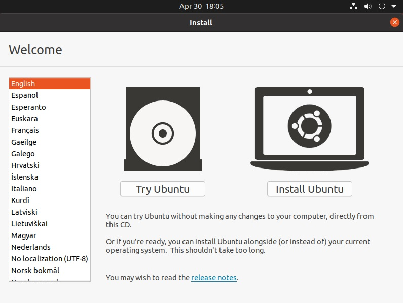
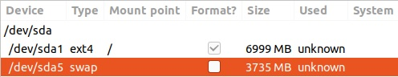

UBUNTU
How do I get started
We will learn you how to install an opering system (OS) and after that how can you use the terminal and a lot of stuffStep 1. Download Ubuntu
Ubuntu is a free and open-source Linux distribution based on Debian. Ubuntu is officially released in three editions Read hereAfter the Ubuntu will boot from the usb, you will see the Ubuntu logo and some checkings and if everything is allright, the os will appear as the image above

At this step you can run the ubuntu on your pc without delete everything or you can install the os, if you want to take a look you can press Try
Step 2. Install Ubuntu
At stage Updates and other software, you can check normal or minimal install (minimal install is the same with normal install but some of the applications are not installed and can be installed after that)
And the other options leave the "Download updates while installing" this will save time after the install is complete because you will not needed to upgrade it
You can install "Third Party Software for graphics and Wifi hardware and other media format" is ideal to check this because you will also save time after install
At this point if you want to erase all the disk press "Install now" and then press Continue
Or if you want to install on another hard disk press something new (I will follow the something new because I want you to learn something)

Select hard disk from "Device for boot loader installation", mine is /dev/sda ATA....
Press the "New Partition Table"
If you have something installed on the hardisk press the "minus" button the delete them
Now You will se "Free Space" and the amount of the size of the disk
At the stage "Create Partition"
Size we select the amount maximum of the hard disk in MB minus 5-10 GB
At "Mount Point" we select "/" from list (That means all the files are under root documents, that includes all the OS) and press Ok
Next we select press again on the "Free Disk" and select from "Mount Point" "spawn-area" (The Swap Area is just fake RAM that lives on your hard drive. It is much slower than actual RAM, but is necessary in many cases to keep a computer running normally. A good rule of thumb is to have as much swap space as you do normal RAM.)
See the pic below for a good exemple  Now press the button "Install Now"
Step 3. Config account
Select your country press continuePut your name and a password
Wait for the install :)